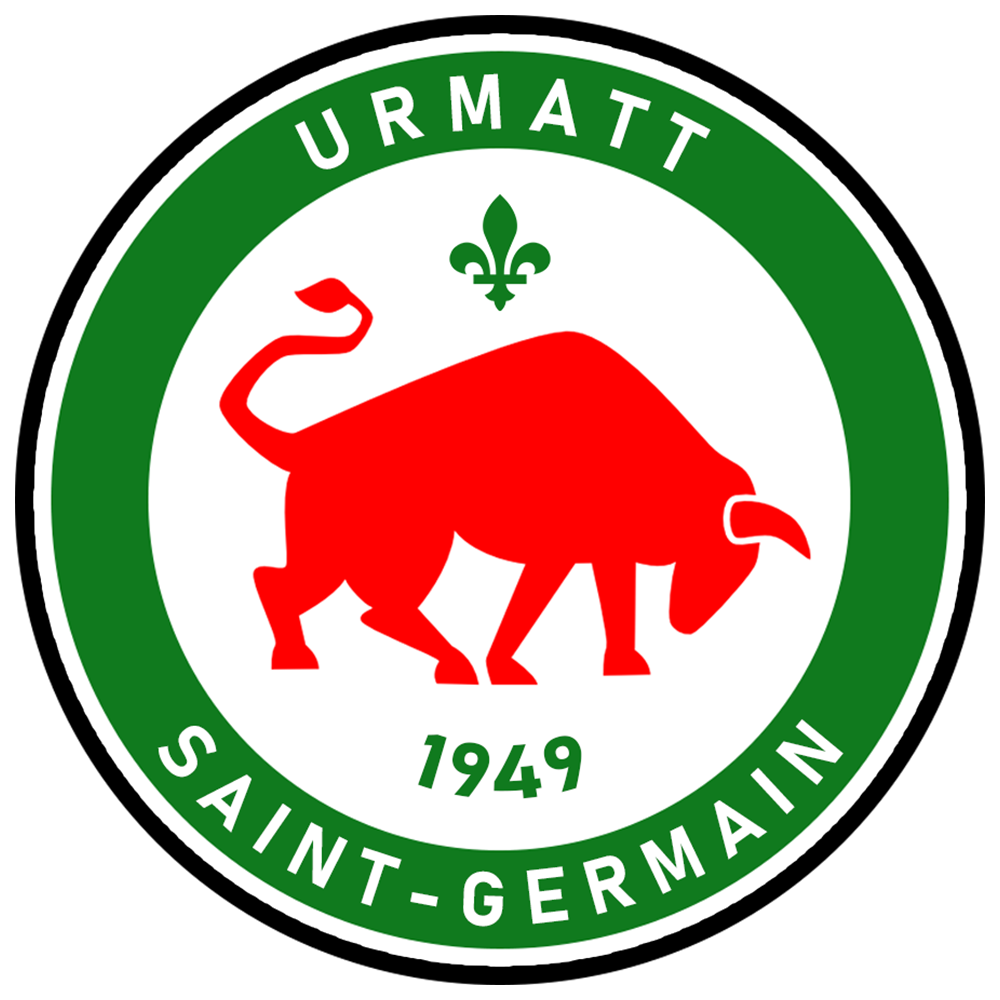
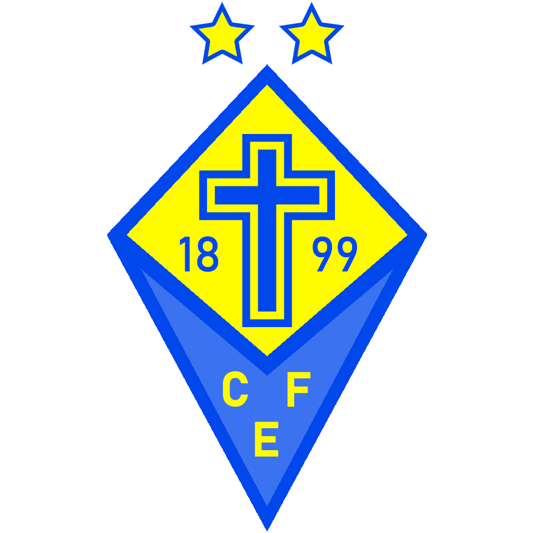
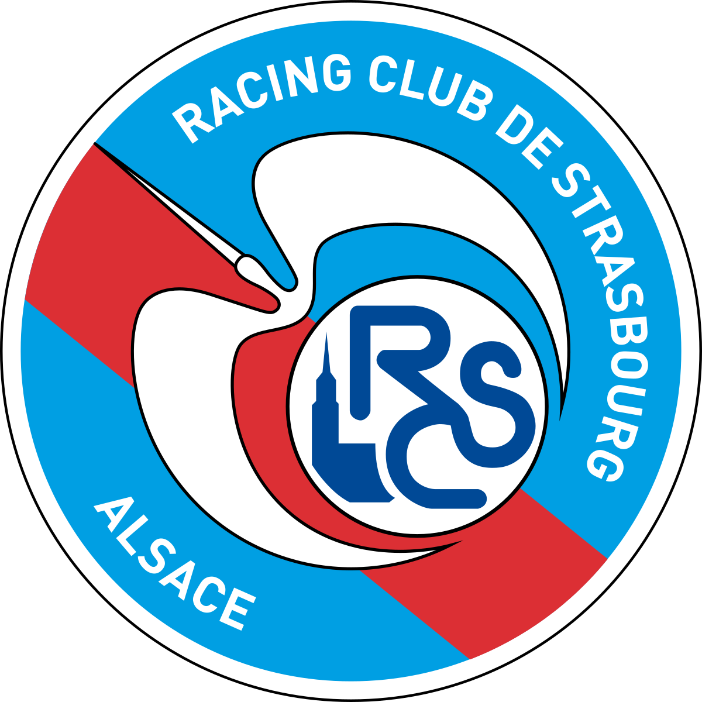
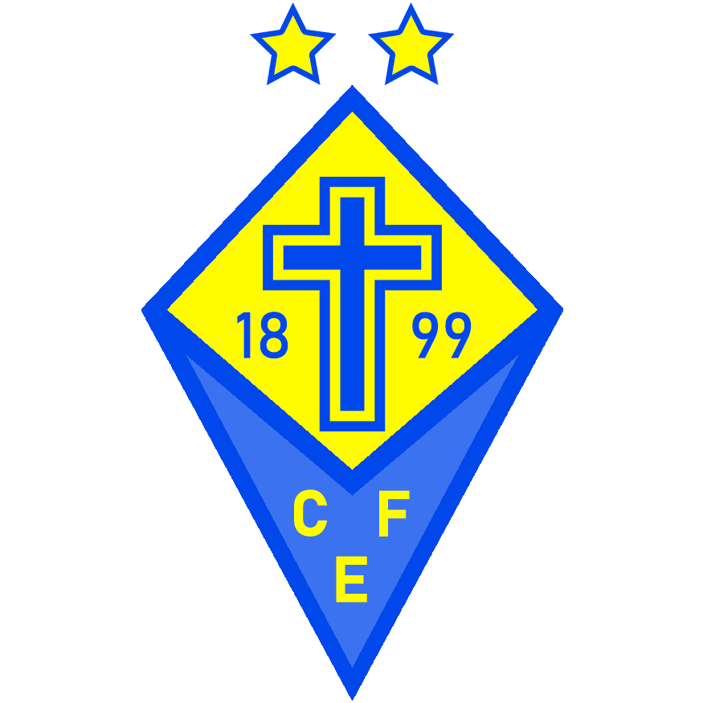
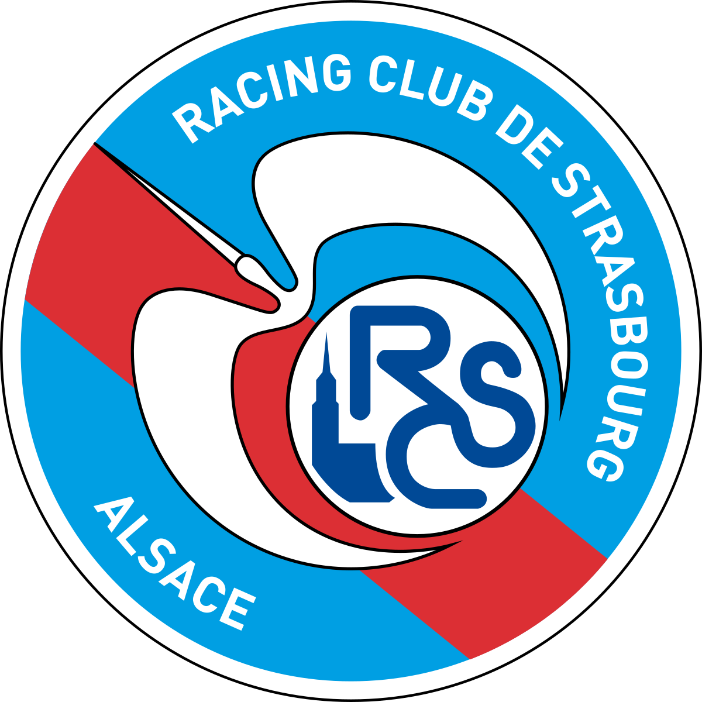

Welcome to the Ligalsa !
The best football league in the world !
This league contain the best teams in Elsass !
This league contain the best teams in Elsass !
Founded in 2016, the league has now 18 teams (before, it had 16 teams).
The most successful teams is FC Duppigheim with 4 titles (2017, 2018, 2020, 2024)
The most successful teams is FC Duppigheim with 4 titles (2017, 2018, 2020, 2024)
The new teams promoted are  Real Mollkirch and
Real Mollkirch and  Dynamo Kaysersberg
Dynamo Kaysersberg
Real Mollkirch and Dynamo Kaysersberg



 


